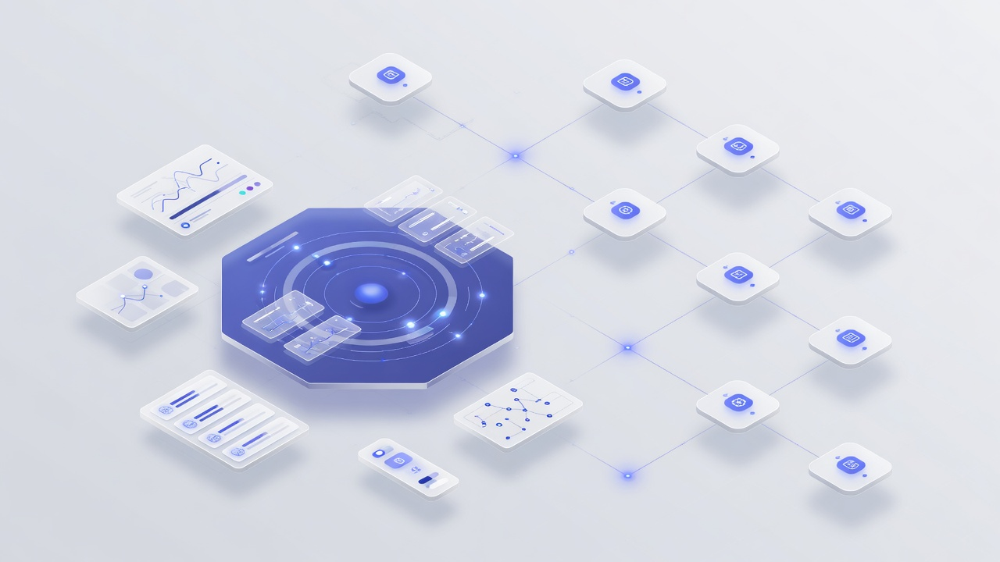
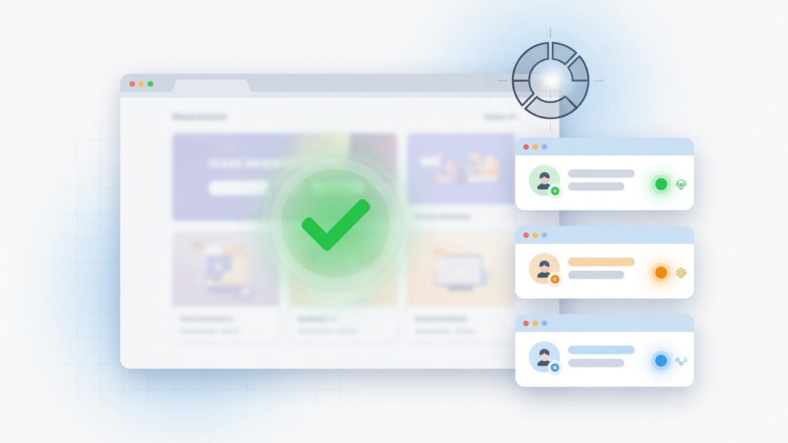

1 Vision & problem
We are building a tool that allows a fleet of agents to operate with minimal inputs and work autonomously toward a bigger task—or a list of smaller tasks—while remaining observable and interruptible.
Why this exists
Single-agent chat sessions do not scale to real delivery work. Real work is a portfolio: many subtasks, shared context, capacity limits, secrets, and periodic human judgment. Today that portfolio is managed in sticky notes, Slack threads, and ad-hoc terminals. Agent Fleet makes the portfolio a first-class system: an operator owns lifecycle and policy; workers own execution and reporting.
What “minimal inputs” means
- A common goal (global system prompt) set once for the fleet.
- Task specifications in a document repository—not step-by-step micromanagement.
- Optional human answers only when a worker is blocked.
- Capacity and secrets configured in one place, not per agent chat.
The vision is not limited to coding. The same orchestration model should support marketing emails, sales pipelines, analysis jobs, and other multi-step operations that benefit from parallel workers and a shared goal.
1b Organizations & projects
Work is organized as organizations → projects → document trees + project orchestrators. Isolation and management scale with the organization, not a single global fleet.
Hierarchy
| Layer | What it is | Owns |
|---|---|---|
| Platform | Agent Fleet deployment | Auth, organization registry, shared infrastructure |
| Organization | Company, team, or workspace boundary | Members & roles, policies & quotas, projects, optional defaults, and board integrations (Jira, Monday.com, …) |
| Project | Unit of delivery work inside an organization | Its own orchestrator (operator), configuration (max agents, secrets, project goal), task board, worker fleet, and a document tree |
| Documents | Specs and shared context under a project path | Folders/files (e.g. specs/, notes/), links to target repos/systems, decomposition into board cards |
flowchart TB
PLAT[Agent Fleet platform]
PLAT --> T1[Organization A · Acme Corp]
PLAT --> T2[Organization B · Contoso]
T1 --> P1[Project · onboarding-redesign]
T1 --> P2[Project · growth-emails]
T1 --> P3[Project · crm-pipeline]
T2 --> P4[Project · …]
subgraph Scope["Each project owns"]
ORCH[Project orchestrator]
DOCS[Document tree]
BOARD[Task board]
CFG[Config · capacity · secrets · goal]
FLEET[Worker fleet]
end
P1 --> ORCH & DOCS & BOARD & CFG & FLEET
ORCH --> FLEET
DOCS --> BOARD
Source: artifacts/diagrams/organization-project-hierarchy.mmd
Organization
- Hard isolation boundary for people, billing/quotas (if multi-organization SaaS), and project membership.
- An organization contains many projects; users switch organization context in the UI.
- May define organization-level policies (e.g. max projects, default max agents, allowed worker profiles) without running agents itself.
- Hosts external board integrations (credentials/OAuth once): Jira, Monday.com, Linear, Asana, Trello, Azure Boards, etc.
Project
- May be created from a starter persona (software, sales, marketing, support, analysis, DevOps, product discovery, content/docs, or blank).
- The primary place operators manage a fleet: dashboard, board, config, live stream.
- Has a dedicated orchestrator / operator service instance (logical isolation at minimum; physical isolation optional per deploy).
- Holds a document tree—not a flat global doc dump. Specs and notes live under the project path and decompose into that project’s board only.
- Project goal (system prompt), secrets, and capacity apply to this project’s workers, not sibling projects.
- Worker fleets do not cross projects; shared learning happens via explicit docs or organization libraries if added later.
- May map its fleet board to an external board/project already connected on the organization (e.g. Jira project
WEB, Monday board “Q3 Campaigns”).
Document tree (per project)
- Hierarchical storage: folders for specs, runbooks, decisions, agent-shared Markdown workspaces.
- Each document can link to a target repository or external system where work is committed/executed.
- “Decompose → board” runs in the project orchestrator, producing cards only on that project’s board.
Per-project orchestration & management
- Lifecycle: spawn/stop workers for this project only, within project max-agents.
- Configuration manager: project goal, env/secrets, loop budgets, worker profiles.
- Monitoring: project dashboard; organization-level rollup can show health across projects without mixing fleets.
- HITL: blockers and artifacts route to project members / reviewers.
Mental model: organization = who you work with (and where integrations live); project = what fleet is working on (and which external board it maps to). Switching projects switches orchestrator context, document tree, board, and worker set.
1c Starter personas
A catalog of sample starter personas (eight domain templates plus blank) helps teams spin up a project without designing structure from scratch. A persona is a reusable template that seeds orchestrator defaults for a domain—not a separate product.
What a persona seeds
- Document tree skeleton (folders and starter specs)
- Default project goal prompt tone and constraints
- Worker profiles (e.g. coding vs copywriter vs CRM sync)
- Board / task conventions and suggested card types
- Validation & loop hooks (tests/PR, brand checklist, CRM schema, etc.)
- Suggested secrets checklist (tokens to attach, not values)
- Supported board integrations recommended for the domain (org must connect provider first; project maps target)
flowchart TB
subgraph Catalog["Starter persona catalog"]
SD[Software development]
SP[Sales pipeline]
MP[Marketing pipeline]
CS[Customer support]
AN[Analysis and research]
DO[DevOps and platform]
PD[Product discovery]
CD[Content and docs]
BL[Blank / custom]
end
SD & SP & MP & CS & AN & DO & PD & CD & BL --> P[New project]
P --> DT[Document tree]
P --> GOAL[Project goal prompt]
P --> WP[Worker profiles]
P --> BD[Board defaults]
P --> VAL[Validation hooks]
P --> SEC[Suggested secrets]
Source: artifacts/diagrams/starter-personas.mmd
Sample catalog (8 domains + blank)
Supported integrations on each persona are recommended org board providers. Connecting happens at organization level; the project maps a specific board/project after create.
| # | Persona | Typical goal | Document tree | Workers & validation | Supported integrations |
|---|---|---|---|---|---|
| 1 | Software development | Implement, test, open draft PRs | specs/ runbooks/ adr/ |
coding · review · e2e · unit/e2e + draft PR | Jira · Linear · Azure Boards |
| 2 | Sales pipeline | Advance opportunities, keep CRM clean | pipeline/ playbooks/ accounts/ |
research · outreach · CRM sync · stage rules | Monday.com · Jira · Asana |
| 3 | Marketing pipeline | Campaigns, drips, brand-safe content | campaigns/ brand/ calendar/ |
copy · design-assist · brand checklist + screenshots | Monday.com · Asana · Trello |
| 4 | Customer support | Triage tickets, draft replies, update knowledge | tickets/ macros/ knowledge/ |
triage · reply · escalate · tone policy + PII scrub | Jira · Linear · Asana |
| 5 | Analysis & research | Answer questions with cited memos | questions/ datasets/ memos/ |
analyst · viz · reproducibility checklist | Jira · Monday.com · Asana |
| 6 | DevOps & platform | Safe infra change, deploy, verify health | runbooks/ changes/ postmortems/ |
infra · deploy · verify · plan/apply + health checks | Jira · Azure Boards · Linear |
| 7 | Product discovery | Synthesize research into opportunities & experiments | interviews/ opportunities/ experiments/ |
synthesizer · writer · evidence links + scoring rubric | Jira · Linear · Monday.com |
| 8 | Content & documentation | Ship docs, release notes, help-center articles | drafts/ published/ style/ |
writer · editor · publisher · style guide + link checks | Asana · Trello · Monday.com |
| — | Blank / custom | User-defined | docs/ |
generic · no default validation; org can save as new persona | Any org-connected board |
How it fits the model
- Personas live in a platform or organization catalog; creating a project applies one persona as the starting point.
- After creation, the project remains free to override goal, tree, workers, and hooks—persona is a bootstrap, not a cage.
- Organizations can clone and customize sample personas into private org personas (e.g. “Acme enterprise sales”).
- Same operator/worker architecture for every persona; only defaults, domain hooks, and suggested board integrations differ.
- Persona integration chips are recommendations; the org must already (or next) connect that provider under Integrations.
Starter personas make the “not just coding” vision concrete: sales, marketing, support, analysis, DevOps, product discovery, and documentation sit beside software development as first-class templates.
1d Organization board integrations
Teams already live in Jira, Monday.com, and similar tools. Agent Fleet connects those boards at the organization level, then lets each project map its internal task board to an external project/board.
Why organization level?
- Credentials once: OAuth apps, API tokens, site URLs, and webhooks belong to the org—not copied into every project.
- Shared providers, many mappings: one Jira site can back several fleet projects (
WEB,SALES, …). - Governance: org admins control which providers are allowed; projects only pick targets they can access.
- Security: tokens stay in the encrypted org vault; workers receive short-lived capability via the orchestrator.
flowchart TB
subgraph Org["Organization"]
INT[Integration hub]
P1[Project A]
P2[Project B]
end
subgraph External["External boards"]
JIRA[Jira]
MON[Monday.com]
LIN[Linear]
ASA[Asana]
TRE[Trello]
AZD[Azure Boards]
end
INT --> JIRA & MON & LIN & ASA & TRE & AZD
P1 & P2 --> INT
P1 <-.-> JIRA
P2 <-.-> MON
Source: artifacts/diagrams/org-board-integrations.mmd
Supported-style providers (examples)
| Provider | Org connection | Project mapping target |
|---|---|---|
| Jira | Cloud/Server site + OAuth / token | Jira project + board + optional epic/parent |
| Monday.com | Workspace + API token | Board + groups as columns |
| Linear | Workspace OAuth | Team + project / cycle |
| Asana | Workspace OAuth | Project + sections |
| Trello | Workspace + API key/token | Board + lists |
| Azure Boards | Org + PAT | Team project + board |
Sync model
- Fleet-native board remains primary for agents (claim, loops, HITL). External boards stay the company system of record when mapped.
- Modes: external → fleet (import/pull), fleet → external (publish), or bidirectional with a conflict policy (e.g. external wins on status, fleet wins on agent fields).
- Status mapping: per project (In dev / WIP / Blocked / Done succeeded|failed ↔ provider columns/states).
- Identity: fleet card stores external key (
WEB-184, Monday item id); agents can comment progress and attach screenshots to the external issue. - Webhooks + polling: org integration hub receives provider webhooks and fans out to mapped project orchestrators.
What does not live on the project alone
- Re-entering Jira/Monday credentials per project (discouraged / blocked).
- Cross-organization sharing of integration credentials.
Pattern: organization connects providers; project maps a board; orchestrator syncs cards so humans can keep working in Jira or Monday while agents run in Fleet.
2 Core architecture
Platform hosts many organizations; each organization hosts many projects. Inside a project, two primary roles apply: the project orchestrator (operator) and workers, plus project-scoped state. Web is primary; CLI/TUI secondary.
Project orchestrator
Per-project operator · management · control plane
- Lifecycle of this project’s worker processes only.
- Capacity-aware spawning from the project board up to project max agents.
- Configuration manager: project goal, env/secrets, loop budgets.
- Monitoring for the project fleet; feeds organization rollups optionally.
- Backed by tmux (or equivalent) sessions namespaced to the project.
Worker service
Execution plane · project-scoped agent unit
- Spawned by the project orchestrator; claims tasks from that project’s board.
- Report success / failure / needs input to the project orchestrator.
- Advance the project goal; read/write the project document tree.
- Screenshot / PDF artifacts for project HITL reviewers.
- Stream progress over WebSockets on the project channel.
System context (platform → organization → project)
flowchart TB
subgraph Platform["Platform"]
AUTH[Auth / membership]
ORGreg[Organization registry]
end
subgraph Org["Organization"]
MEM[Members & roles]
TPOL[Policies · quotas]
PROJS[Projects]
end
subgraph Project["Project"]
subgraph ControlPlane["Project orchestrator"]
API[API + WebSocket]
CFG[Config manager]
SCH[Scheduler]
LIFE[Lifecycle]
MON[Monitoring]
end
subgraph DataPlane["Project data"]
DOCTREE[(Document tree)]
BOARD[(Task board)]
MD[Markdown workspaces]
SECRETS[(Encrypted secrets)]
end
subgraph Workers["Project fleet"]
W1[Worker 1]
W2[Worker 2]
WN[Worker N]
end
end
subgraph Targets["Targets"]
REPO[Git repositories]
EXT[External systems]
end
AUTH --> ORGreg --> Org
MEM --> PROJS --> Project
API --> CFG & SCH & LIFE & MON
SCH --> LIFE --> W1 & W2 & WN
W1 & W2 & WN <--> DOCTREE & BOARD & MD
CFG --> SECRETS
W1 & W2 & WN --> REPO & EXT
W1 & W2 & WN -->|artifacts| MON
Source: artifacts/diagrams/system-architecture.mmd
3 Key flows
Operator ↔ worker sequence
sequenceDiagram
autonumber
participant H as Human
participant UI as Web UI
participant Plat as Platform
participant Orch as Project orchestrator
participant W as Worker
participant S as Project state
participant T as Target system
H->>UI: Select organization + project
UI->>Plat: Authorize membership
H->>UI: Set project goal, capacity, secrets
UI->>Orch: Save project configuration
H->>UI: Add document under project tree
UI->>Orch: Ingest document + link target
Orch->>Orch: Decompose into project board cards
Orch->>W: Spawn worker in project fleet
W->>S: Claim task
loop Until done or blocked
W->>T: Act
W->>W: Validate
W->>Orch: Stream progress
end
alt Success
W->>S: Done succeeded
W->>Orch: Artifacts + screenshot
else Needs input
W->>S: Blocked
Orch->>UI: Notify project reviewer
H->>UI: Provide input
else Failure
W->>S: Done failed
end
Orch->>UI: Project dashboard update
Source: artifacts/diagrams/worker-operator-sequence.mmd
Task board lifecycle
stateDiagram-v2
[*] --> SpecDraft: Human writes spec
SpecDraft --> Decomposed: Planner breaks into subtasks
Decomposed --> InDev: Cards on board
InDev --> InProgress: Worker claims task
InProgress --> Blocked: Needs more input
Blocked --> InProgress: Human provides input
InProgress --> DoneSuccess: Criteria met
InProgress --> DoneFailed: Max loops / unrecoverable
DoneSuccess --> [*]
DoneFailed --> [*]
Source: artifacts/diagrams/task-lifecycle.mmd · Board columns: In dev → WIP → Done (succeeded / failed), plus blocked.
4 Features
Web-based control UI
Organization/project switcher; per-project lifecycle, configuration, board, document tree, and live monitoring.
Trello-style task board
Organize subtasks and move them across In dev → Work in progress → Done (succeeded / failed), with a blocked/needs-input path. Optionally sync to org-connected external boards.
External board integrations
Organization-level Jira, Monday.com, Linear, Asana, Trello, Azure Boards—projects map fleet cards to the company system of record.
Per-project document tree
Hierarchical specs and notes under each project; decompose into that project’s board; link to target repos/systems.
Domain-agnostic fleet
Same operator/worker model across domains—bootstrapped by eight sample personas (software, sales, marketing, support, analysis, DevOps, product discovery, content) plus blank.
Starter personas
Eight sample domain templates (+ blank) that seed trees, goals, workers, validation, and recommended board integrations.
Loop engineering
Closed loops for implement → test/validate → deploy-or-ship → report, until criteria pass or budget is exhausted.
Project monitoring dashboard
High-level view of this project’s agents; optional organization rollup across projects without mixing fleets.
CLI & TUI (secondary)
Initialize tasks and inspect fleet state from the terminal; web remains the primary operator surface.
5 Loop engineering
Workers do not “one-shot” tasks. They run a bounded engineering loop so quality is enforced by feedback, not by a single generation.
flowchart LR
A[Pull next task] --> B[Plan steps]
B --> C[Act / implement]
C --> D[Test / validate]
D --> E{Pass?}
E -->|yes| F[Report success]
E -->|no| G{Retries left?}
G -->|yes| B
G -->|no| H[Report failure / escalate]
F --> I[Screenshot / PDF]
H --> I
I --> J[Update board + notify operator]
Source: artifacts/diagrams/agent-loop.mmd
- Deployments and tests are first-class loop steps when the domain is software.
- For non-code domains, “validate” may mean lint of email copy, CRM schema checks, or analysis notebook smoke tests.
- Max loops is a configuration knob so runaway agents cost is bounded.
6 State, data & human-in-the-loop

| Concern | Mechanism | Notes |
|---|---|---|
| Organization / project membership | Platform auth + organization registry | Who can see and operate which projects |
| External board links | Org integration hub + per-project mapping | Jira/Monday/… credentials at org; board/project target per fleet project |
| Shared agent context | Project Markdown workspaces + optional MongoDB | Collaboration between agents within a project |
| Task queue / board | Per-project board store | Claim / status transitions; not shared across projects |
| Specifications | Per-project document tree | Folders/files; linked to target repo or system |
| Secrets / confidential data | Encrypted Postgres or SQLite (project-scoped) | Never dumped into Markdown; optional organization-level vault later |
| Live UX | WebSockets client/server streaming | Dashboard and worker progress |
| Verification | Browser screenshot / PDF capture | HITL reviews artifacts when status is blocked or done |
HITL is first-class: agents pause for inputs and surface verifiable artifacts rather than only free-form logs. The operator UI should make “needs input” as visible as “running.”
7 UI prototypes
Interactive HTML mockups (accurate labels via code, not image models). Open any card in a
full tab for the complete layout. Files live under artifacts/prototypes/.
All project screens assume organization Acme Corp and a selected project.
8 Stack & technical considerations
- Backend: Rust and/or Go for operator and worker runtimes (lifecycle, scheduling, streaming).
- Frontend: React / Next.js for the primary web UI.
- Process model: tmux (or similar) sessions for attachable agent isolation.
- Streaming: client/server WebSockets for live dashboards and worker events.
- Artifacts: browser screenshot and PDF capabilities for status reporting.
- Interfaces: web first; supporting TUI/CLI to kick off and inspect tasks.
Non-goals (for an initial cut)
- Fully unsupervised production deploys without HITL gates.
- Replacing specialized CI; Fleet orchestrates loops that may call CI.
- A single mega-agent that holds all context—prefer many small workers + project docs.
- One global orchestrator for all organizations/projects—orchestration is per project.
9 Success picture
- A user joins an organization and creates a project from a starter persona (or blank).
- They refine that project’s goal, secrets, and max fleet size on its orchestrator—and optionally map the board to Jira / Monday.com via org integrations.
- They add a spec under the project document tree and link a target.
- The project orchestrator decomposes work onto the project board and spawns workers up to the cap.
- Workers loop implement → validate → report; humans monitor the project dashboard and HITL only when needed.
Success is not “agents that never need people.” Success is high parallel throughput with low operator toil and auditable outcomes.
10 Open questions
- How aggressive should auto-decomposition be vs. human-authored board cards?
- What is the unit of a “worker”—one LLM session, one tmux pane, one container?
- How do agents coordinate file locks / PR ownership on a shared repo?
- Which of the eight starter personas ship in v1, and which wait for later releases?
- Can organizations publish custom personas back to a private catalog?
- Retention and redaction policy for screenshots and prompt logs containing secrets?
- How hard is project isolation—logical namespaces vs. dedicated orchestrator processes per project?
- Can documents or secrets be shared across projects within an organization (libraries) without breaking isolation?
- Organization rollup dashboard: what metrics aggregate without leaking project-sensitive content?
- Default conflict policy when Jira/Monday status disagrees with fleet agent state?
- Which providers are v1 (Jira + Monday) vs. later (Linear, Asana, Trello, Azure Boards)?
- Multi-organization SaaS vs. single-organization deploy: same model, different packaging?